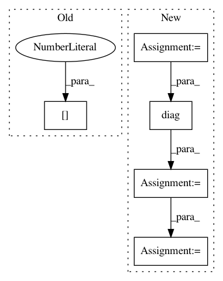

8111b1a80dde0202f9ae96f7598441218066e2db,innvestigate/tools/pattern.py,LinearPattern,compute_pattern,#LinearPattern#,118
Before Change
mean_x = self.mean_x.get_weights()[0]
mean_y = self.mean_y.get_weights()[0]
mean_xy = self.mean_xy.get_weights()[0]
mean_yy = self.mean_yy.get_weights()[0]
if True:
ExEy = mean_x * mean_y
EyEy = mean_y * mean_y
After Change
cov_xy = mean_xy - ExEy
w_cov_xy = np.diag(np.dot(W2D.T, cov_xy))
A = safe_divide(cov_xy, w_cov_xy)
// update length
if True:
norm = np.diag(np.dot(W2D.T, A))
A = safe_divide(A, norm)
// check pattern
if False:
tmp = np.diag(np.dot(W2D.T, A))
In pattern: SUPERPATTERN
Frequency: 3
Non-data size: 5
Instances
Project Name: albermax/innvestigate
Commit Name: 8111b1a80dde0202f9ae96f7598441218066e2db
Time: 2018-02-20
Author: alber.maximilian@gmail.com
File Name: innvestigate/tools/pattern.py
Class Name: LinearPattern
Method Name: compute_pattern
Project Name: pymc-devs/pymc3
Commit Name: 7a31475bb139893cd3fd2bd1dbc33d040a0511c8
Time: 2017-05-04
Author: aseyboldt@users.noreply.github.com
File Name: pymc3/distributions/multivariate.py
Class Name: MvNormal
Method Name: _logp_tau
Project Name: geomstats/geomstats
Commit Name: dc39188e6611f254dfb9ef0358570efe59704ff5
Time: 2018-05-03
Author: ninamio78@gmail.com
File Name: geomstats/spd_matrices_space.py
Class Name: SPDMatricesSpace
Method Name: sqrtm